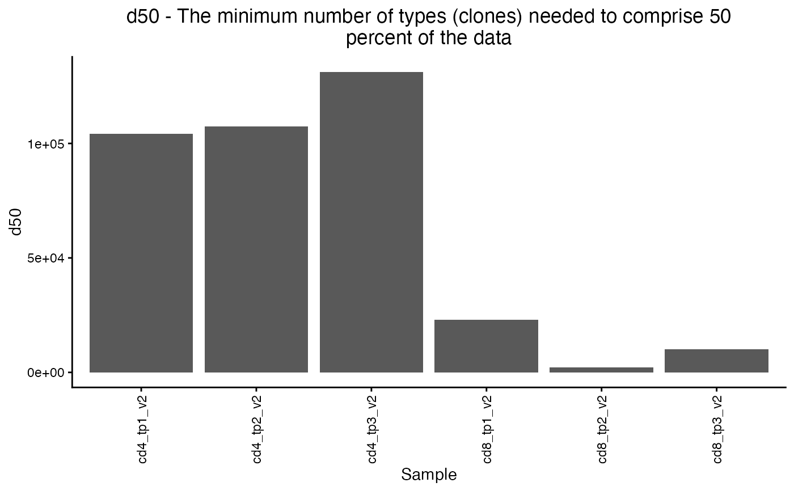

Calculate TCR repertoire diversity metrics
calculate_diversity.Rd![[Experimental]](figures/lifecycle-experimental.svg)
calculate_diversity() returns a number of clonal diversity measures (e.g. Hill numbers,
Shannon and Simpson indices) calculated from supplied data.
Usage
calculate_diversity(
data,
chain = c("beta", "alpha"),
metrics = get_all_div_metrics(),
samples = NULL,
q = 0:6,
percent = seq(10, 90, 10),
n = 10
)
diversity(...)Arguments
- data
a TIRTLseqData object
- chain
the chain to use when calculating metrics, alpha or beta (default is "beta")
- metrics
the diversity indices or metrics to calculate.
- samples
the samples to calculate diversity metrics for (default is NULL, all samples)
- q
a vector of integers specifying which "orders" to calculate for Hill numbers and Renyi entropy.
- percent
a percentage (out of 100) or a vector of percentages to use when calculating dXX values, i.e. the minimum number of clones needed to cover XX percent of the sample.
- n
the number of most frequent clones to use for the topNfraction metric.
Value
returns a list with the requested indices. "simpson", "gini", "gini.simpson", "inv.simpson", "shannon", "berger.parker", and "richness" return a vector of length one.
"d50" and "dXX" return a data frame with the minimum number of clones needed to make up 50 (or XX) percent of the data, the percentage (50 or XX) supplied, and the actual percentage of the data made up by those clones. "dXX" may return a data frame with many rows if it is supplied a vector of percentages.
"renyi" and "hill" return a data frame with the two columns, where each row contains the value for the Hill (or Renyi) number of order 'q', and the other contains the value of the corresponding 'q'. They return a data frame with many rows if supplied with a vector of orders (e.g. 1:5).
Details
This function calculates the following diversity indices:
simpson - The Simpson diversity index (https://en.wikipedia.org/wiki/Diversity_index#Simpson_index). This equals the probability that two entities taken at random from the dataset represent the same type. It is the inverse of the Hill number of order 2.
gini - The Gini index/coefficient (https://en.wikipedia.org/wiki/Gini_coefficient).
gini.simpson - The Gini-Simpson index (https://en.wikipedia.org/wiki/Diversity_index#Gini%E2%80%93Simpson_index). Equal to 1-Simpson_index. This equals the probability that two entities taken at random from the dataset represent different types.
inv.simpson - The Inverse-Simpson index - i.e. the reciprocal of the Simpson index, which measures the effective number of types when the weighted arithmetic mean is used to calculate diversity. It is equivalent to the Hill number of order 2. (https://en.wikipedia.org/wiki/Diversity_index#Inverse_Simpson_index)
shannon - The Shannon diversity index, also known as the Shannon-Wiener index or Shannon entropy. It is equivalent to the Renyi entropy when 'q' = 1. (https://en.wikipedia.org/wiki/Diversity_index#Shannon_index)
berger.parker - The Berger-Parker index, i.e. the proportion of the most abundant type in the dataset. (https://en.wikipedia.org/wiki/Diversity_index#Berger%E2%80%93Parker_index)
richness - The species richness, i.e. the total number of unique types observed in the data (https://en.wikipedia.org/wiki/Diversity_index#Richness).
d50 - The minimum number of types (clones) needed to comprise 50 percent of the data.
dXX - The minimum number of types (clones) needed to comprise XX percent of the data.
renyi - The Renyi entropy, a generalization of Shannon diversity/entropy for values of 'q' other than 1. The formula for Renyi entropy is undefined at q=1, but it is defined as its limit, which equals the Shannon entropy. When q=0, it is simply the natural logarithm of the richness or total number of types. When q=Inf, it is defined by its limit, which is equal to the negative of the natural logarithm of the proportion of the most abundant type. (https://en.wikipedia.org/wiki/Diversity_index#R%C3%A9nyi_entropy)
hill - The Hill numbers of order q, also known as the true diversity or the effective number of types. This is the number of equally abundant types needed for the average proportional abundance of types to equal that observed in the dataset. The order 'q' defines the exponent used in the formula to define the 'generalized mean' of the proportional abundances.
q = 2 corresponds to the arithmetic mean (https://en.wikipedia.org/wiki/Arithmetic_mean).
q = 1 corresponds to the geometric mean (https://en.wikipedia.org/wiki/Geometric_mean).
and q = 0 corresponds to the harmonic mean (https://en.wikipedia.org/wiki/Harmonic_mean).
When q = Inf, it is defined by its limit, which is the inverse of the proportion of the most abundant type.
In general, as q increases, less weight is given to rarer species. (https://en.wikipedia.org/wiki/Diversity_index#Effective_number_of_species_or_Hill_numbers)
Examples
folder = system.file("extdata/SJTRC_TIRTL_seq_longitudinal",
package = "TIRTLtools")
sjtrc = load_tirtlseq(folder,
meta_columns = c("marker", "timepoint", "version"), sep = "_",
verbose = FALSE)
#> Loading files from: /Users/nclark52/git/TIRTLtools/inst/extdata/SJTRC_TIRTL_seq_longitudinal...
#> Found 6 beta chain pseudo-bulk files.
#> Found 6 paired chain files.
#> Loaded 18 files from 6 samples.
#> 23.7 seconds
div = calculate_diversity(sjtrc, chain = "beta", metrics = "d50")
#>
#> -- Calculating diversity indices for sample 1 of 6.
#> -- Calculating diversity indices for sample 2 of 6.
#> -- Calculating diversity indices for sample 3 of 6.
#> -- Calculating diversity indices for sample 4 of 6.
#> -- Calculating diversity indices for sample 5 of 6.
#> -- Calculating diversity indices for sample 6 of 6.
plot_diversity(div, metric = "d50")
